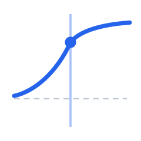
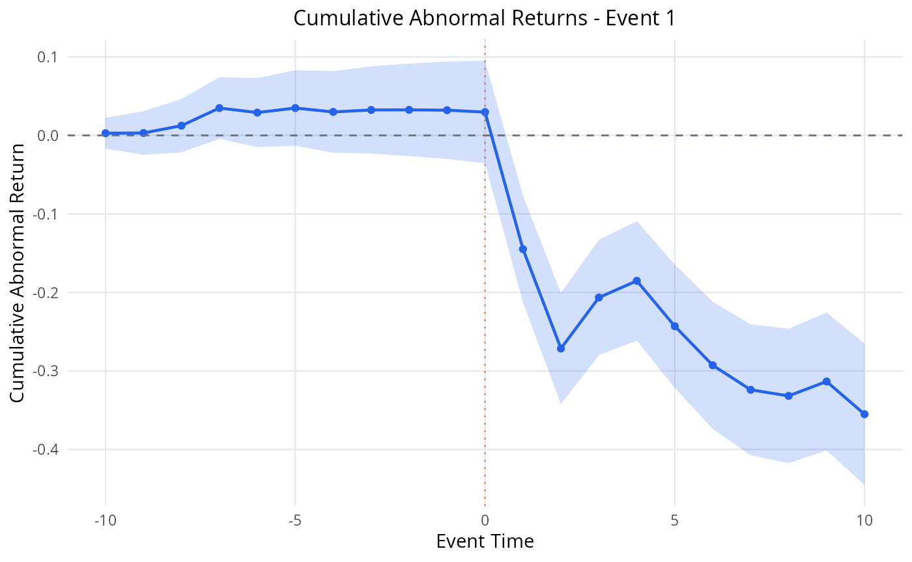

Methods: Return Models
Source:vignettes/articles/methods-return-models.Rmd
methods-return-models.Rmd1. Title & Abstract
This article explains the return models that
EventStudy uses to generate abnormal returns — the raw material of every
event study. A return model specifies what a security’s return would
have been absent the event; the abnormal return is the gap between
the realised return and that expectation. After reading, you will know
which model family fits which research setting, see the market model
estimated live on the bundled dieselgate data, and know
where the factor-based (Fama-French / Carhart), conditional-volatility
(GARCH), and buy-and-hold (BHAR) variants apply.
2. When to Use This Method
The choice of return model is driven by data availability and the return horizon:
- Market model — the workhorse. Needs only a firm return series and one market index. Appropriate for short-horizon daily event studies.
- Market-adjusted / comparison-period-mean — when you cannot estimate a reliable beta (short history), constrain \beta=1 or use the pre-event mean.
- Fama-French 3/5-factor, Carhart 4-factor — when systematic exposure to size, value, profitability, investment, or momentum could contaminate a simple market beta. Require a factor return table.
- GARCH / DCC-GARCH — when event-induced or clustered volatility makes the homoskedastic OLS residual variance untrustworthy.
- BHAR (buy-and-hold abnormal returns) — long-horizon studies where compounding, not summing, is the economically correct aggregation.
3. Intuition
Fit a line through the firm’s returns versus the market’s returns during a quiet estimation window. That line is the firm’s “normal” behaviour. Carry the line forward into the event window and measure how far each realised return sits above or below it. Those vertical distances are the abnormal returns; their running total is the cumulative abnormal return (CAR).
4. Model & Null Hypothesis
The market model regresses firm returns on contemporaneous market returns over the estimation window:
R_{it} = \alpha_i + \beta_i R_{mt} + \varepsilon_{it}, \qquad \hat{\varepsilon}_{it} = R_{it} - (\hat{\alpha}_i + \hat{\beta}_i R_{mt}).
The abnormal return \hat{\varepsilon}_{it} is the out-of-sample residual in the event window. Cumulating over [t_1, t_2] gives the CAR:
\text{CAR}(t_1, t_2) = \sum_{t=t_1}^{t_2} \hat{\varepsilon}_{t}.
For long horizons, buy-and-hold abnormal returns compound rather than sum:
\text{BHAR}_i = \prod_{t}(1 + R_{it}) - \prod_{t}(1 + R_{mt}).
The null hypothesis is H_0: \mathbb{E}[\hat{\varepsilon}_{it}] = 0 in the event window — the event conveys no abnormal information (MacKinlay 1997; Brown and Warner 1985).
5. Assumptions
- Return-generating stability: \alpha_i, \beta_i estimated in the estimation window carry into the event window (testable via rolling betas).
- Uncorrelated, homoskedastic residuals for OLS inference (relaxed by the GARCH family; see §8).
- Clean estimation window: no confounding events contaminate the pre-event data used to fit the model.
- Correct market proxy: the index spans the firm’s systematic risk (relaxed by the factor models).
6. Worked Example
The always-live path here is the MarketModel family
on the bundled dieselgate data — no factor table or
optional package required. Models are selected by passing an R6
model object into ParameterSet$new(), never a
string.
library(EventStudy)
data("dieselgate")
task <- EventStudyTask$new(
firm_stock_data_tbl = dieselgate$firm,
reference_tbl = dieselgate$index,
request_tbl = dieselgate$request
)
# Model selection is by R6 object, not a string:
params <- ParameterSet$new(return_model = MarketModel$new())
task <- prepare_event_study(task, params)
task <- fit_model(task, params)
task <- calculate_statistics(task, params)MarketAdjustedModel$new(),
ComparisonPeriodMeanAdjustedModel$new(),
RollingWindowModel$new(), and BHARModel$new()
are also fully live on dieselgate — swap the
return_model argument to use them.
7. Rendered Table
es_tt(
head(tidy.EventStudyTask(task, type = "car"), 10),
caption = "Market-model CAR t-statistics on the dieselgate event (first 10 rows)."
)| event_id | group | firm_symbol | term | estimate | std.error | statistic | p.value |
|---|---|---|---|---|---|---|---|
| 1 | VW Group | VOW.DE | [-10,-10] | 0.002802 | 0.01002 | 0.2796 | 0.78 |
| 1 | VW Group | VOW.DE | [-10,-9] | 0.003083 | 0.01417 | 0.2175 | 0.82796 |
| 1 | VW Group | VOW.DE | [-10,-8] | 0.012382 | 0.01736 | 0.7134 | 0.47624 |
| 1 | VW Group | VOW.DE | [-10,-7] | 0.034831 | 0.02004 | 1.7381 | 0.08344 |
| 1 | VW Group | VOW.DE | [-10,-6] | 0.029097 | 0.02241 | 1.2986 | 0.19528 |
| 1 | VW Group | VOW.DE | [-10,-5] | 0.034859 | 0.02454 | 1.4203 | 0.15679 |
| 1 | VW Group | VOW.DE | [-10,-4] | 0.029885 | 0.02651 | 1.1273 | 0.26072 |
| 1 | VW Group | VOW.DE | [-10,-3] | 0.032411 | 0.02834 | 1.1436 | 0.25389 |
| 1 | VW Group | VOW.DE | [-10,-2] | 0.032555 | 0.03006 | 1.083 | 0.27987 |
| 1 | VW Group | VOW.DE | [-10,-1] | 0.032121 | 0.03169 | 1.0137 | 0.31171 |
8. Rendered Plot
plot_event_study(task, type = "car", event_id = 1)
Cumulative abnormal return over the dieselgate event window (event 1).
8b. Factor and Conditional-Volatility Variants
Fama-French 3/5-factor and Carhart 4-factor models
require a factor table with market_excess,
smb, hml (plus rmw,
cma for FF5 and mom for Carhart). The bundled
dieselgate data has no factor table, so
the following is a conceptual snippet (eval=FALSE) —
running it live would error. See the Factor Models & BHAR
vignette for a worked factor example.
# Requires a factor_tbl with market_excess/smb/hml[/rmw/cma/mom]:
params_ff3 <- ParameterSet$new(return_model = FamaFrench3FactorModel$new())
params_ff5 <- ParameterSet$new(return_model = FamaFrench5FactorModel$new())
params_c4 <- ParameterSet$new(return_model = Carhart4FactorModel$new())The factor models decompose systematic exposure beyond a single market beta (Fama and French 1993, 2015; Carhart 1997), reducing the risk that a size/value/momentum tilt is mislabelled as abnormal performance.
GARCH conditions the residual variance on its own
recent history, which matters when volatility clusters around the event.
It is gated on rugarch:
params_g <- ParameterSet$new(return_model = GARCHModel$new())
task_g <- prepare_event_study(
EventStudyTask$new(dieselgate$firm, dieselgate$index, dieselgate$request),
params_g
)
task_g <- fit_model(task_g, params_g)
task_g <- calculate_statistics(task_g, params_g)
es_tt(head(tidy.EventStudyTask(task_g, type = "car"), 5),
caption = "GARCH-based CAR t-statistics.")If rugarch is not installed the chunk above is skipped.
Conceptually, the GARCH model replaces the constant OLS residual
variance \sigma^2 with a time-varying
\sigma_t^2 following a GARCH(1,1)
recursion, and the DCC-GARCH extension further models
the time-varying correlation across firms — appropriate when a single
event hits several securities whose joint volatility co-moves.
Volume and Volatility models target abnormal trading volume and abnormal return dispersion rather than abnormal price returns; see the Volume & Volatility Event Study vignette for worked usage.
# Volume / Volatility models need firm_volume columns not present in dieselgate:
params_vol <- ParameterSet$new(return_model = VolumeModel$new())9. Interpretation
The table in §7 reports the per-horizon CAR and its t-statistic for the dieselgate event; a t beyond roughly \pm 2 flags a statistically abnormal cumulative return at conventional levels. The plot in §8 traces the CAR path across the event window — a sharp downward break at the event date is the visual signature of the emissions-scandal shock. Choose the factor or GARCH variants when the market-model assumptions in §5 are implausible for your setting; the abnormal-return machinery downstream is identical.